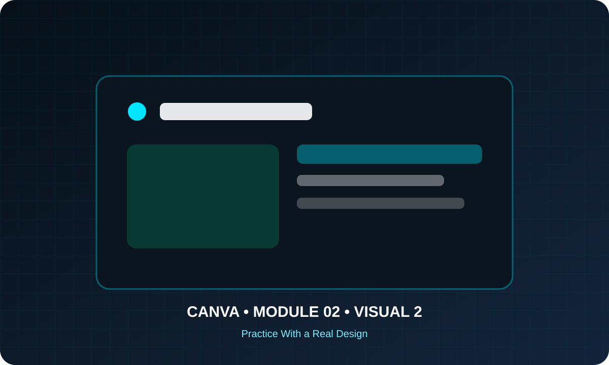
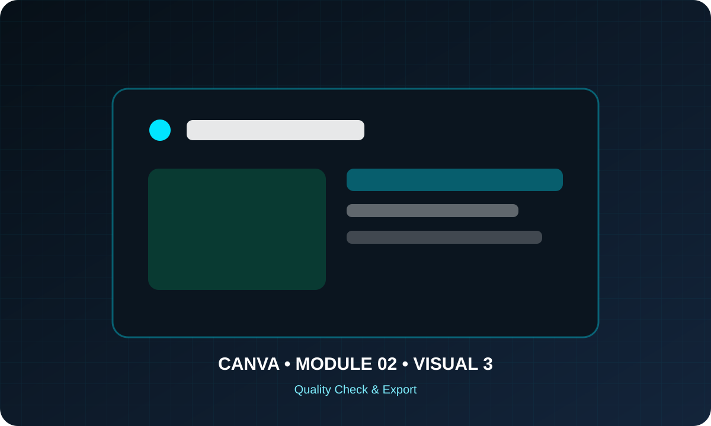

Design Principles That Make Work Look Professional
Turn basic layouts into confident designs using hierarchy, alignment, spacing, contrast, balance, grids and visual rhythm.
Before you start
Open Canva in a separate tab and complete the actions while you read. This course is designed for active practice, not passive scrolling. Keep one folder named Canva Course Practice and save every module project there.
Build the Skill — Hierarchy and focal points
- Open Canva and create a fresh practice file instead of editing an old finished design.
- Follow the lesson focus deliberately. Change one variable at a time so you can see what each tool or design decision actually does.
- Save a clean checkpoint before experimenting further. This makes it easy to compare versions and recover from mistakes.

Practice With a Real Design — Alignment, grids and spacing
- Recreate the demonstrated idea using your own text, colors and assets rather than copying it mechanically.
- Check alignment, spacing, readability and consistency at 100% zoom and again from a distance.
- Make one intentional improvement that was not shown in the example and explain to yourself why it improves the design.

Quality Check & Export — Contrast, balance and visual rhythm
- Review the design for hierarchy, spelling, contrast, margins and accidental misalignment.
- Preview the final size and verify that important content is not too close to edges or hidden behind other elements.
- Export a practice copy using the file format that matches the intended use, then reopen it and inspect the result.
Knowledge checkpoint
- Can you explain the main principle of this module in your own words?
- Can you reproduce the core workflow without restarting the lesson?
- Can you identify at least one weak design decision and explain how you would improve it?
- Can you export the result in a format appropriate for its intended use?
Build this before continuing
Redesign a deliberately poor social post into a polished version.
Completion standard: create a first version, review it, make at least three deliberate improvements, export the final version and keep both versions so you can see your progress.
Ready to move on?
You are ready when you can complete the module project confidently without depending on the example for every decision. The goal is not memorizing Canva buttons — it is learning to make sound visual decisions on your own.